Sightseeing
浦東
上海を蛇行して貫ぐ黄浦江の東側に広がるのは浦東新区。
外灘の対岸に位置する陸家嘴エリアを中心に高層ビルが林立し、ビジネス街を形成している。
高層ビル好きにはたまらない。観光客向けの施設も充実している。
地下鉄2号線陸家嘴駅から徒歩5分
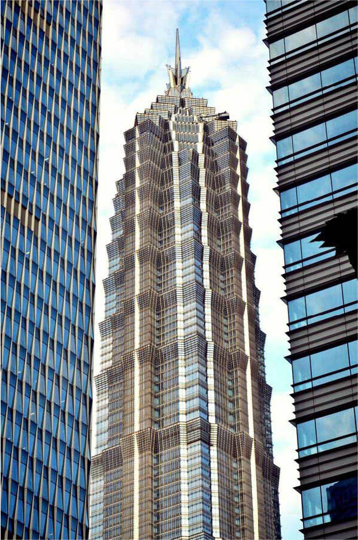
金茂大厦 Jin Mao Tower
高さ420.5m、88階。ビルの最上階は有料の展望台として公開されており、東方明珠電視塔や上海環球金融中心の展望台と並ぶ人気の展望ポイントである。53階から87階にはメインテナントであるホテル「グランド・ハイアット上海」がある。
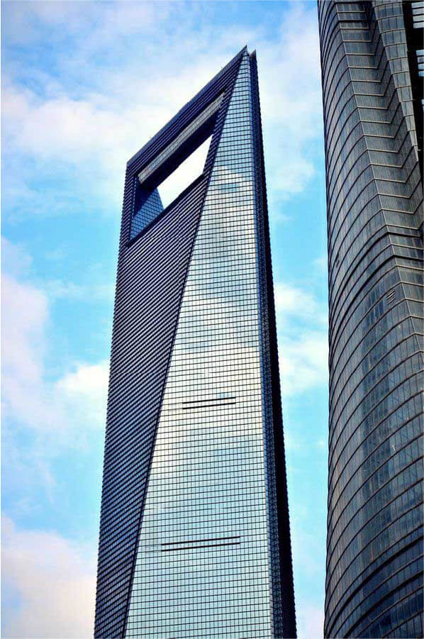
上海環球金融中心 Shanghai World Financial Center, SWFC
高さ492m。地下2階3階はショッピングモール。高層階にはホテルパークハイアット上海が入っている。展望台直通のエレベーターは世界最速で地下2階から119階までの565.4mを55秒で到達する。
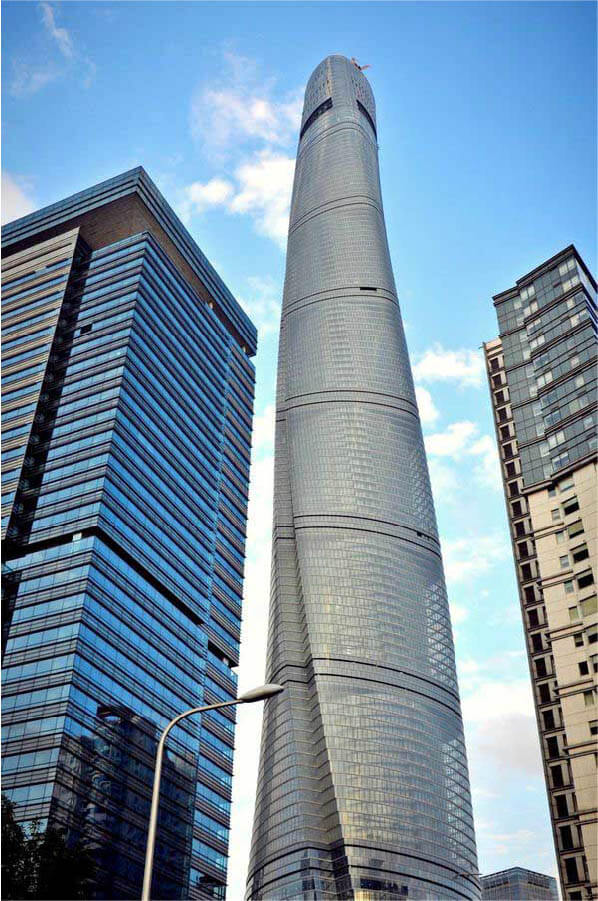
上海中心大厦 Shanghai Tower
高さは632mで、世界でもブルジュ・ハリファ に次ぐ高さの超高層ビルである。タワーの下部には商業施設やイベントスペースなどが設けられる。最上部には展望台があり、世界で最も高い外気に露出した展望台となる。
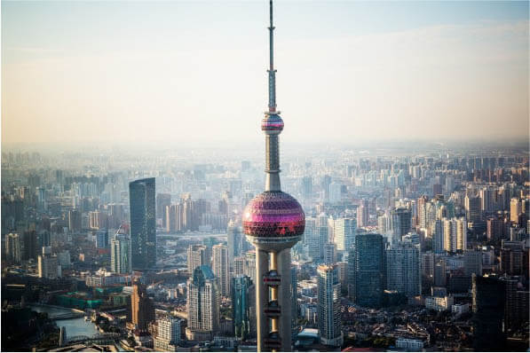
東方明珠電視塔
大小合わせて11個の球体がデザインされている。球体は「真珠」をイメージしている。これは、設計者が、唐代の詩人白居易の長編の詩「琵琶行」の一節からインスピレーションを得たといわれている。
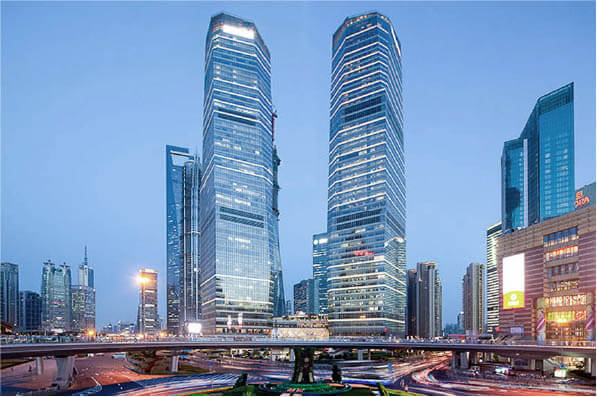
上海IFC
ショッピングモール、レストラン、高層オフィスビル、5つ星ホテル、サービスマンションなどが併設された複合ビル。陸家嘴駅に地下2階の売場が直結しています。映画館やスーパーもあって、一日中過ごせる。
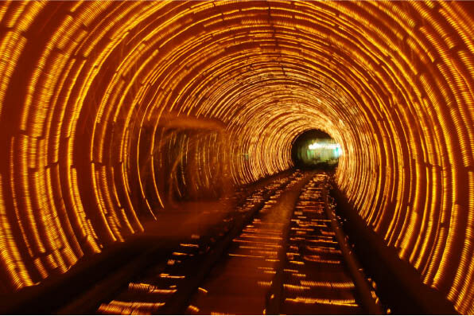
上海外灘観光隧道
外灘と浦東地区を結ぶ、全長646.7mの黄浦江の海底トンネルである。トンネルの内壁に電飾の飾りがあり、自動無人運転の車両は、ガラス張りで視野が広く、6D音響設備システムの効果と絶えず変わる景観を味わえる。
外灘
上海随一の観光エリアである。黄浦江西岸を走る中山東一路沿い、全長1.1kmほどの地域を指す。
「外灘」という名称は、「外国人の河岸」を意味する。
地下鉄2,10号線南京西路から徒歩7分
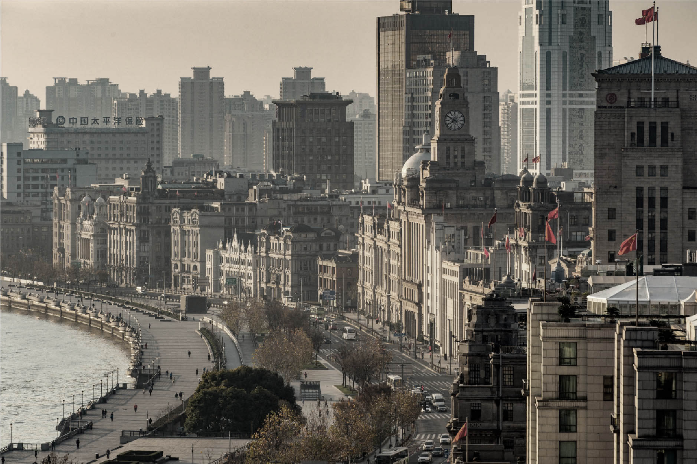
この一帯は19世紀後半から20世紀前半にかけての租界地区であり、当時建設された西洋式高層建築が建ち並んでいる。
租界時代の行政と経済の中心であったことから現在も官庁と銀行が多いが、ジョルジョ・アルマーニやカルティエなどの大型旗艦店や、
租界時代のレトロな雰囲気を売り物にしたバーやレストランなどが建物の中に入るようになり、お洒落な街並みに変貌しつつある。
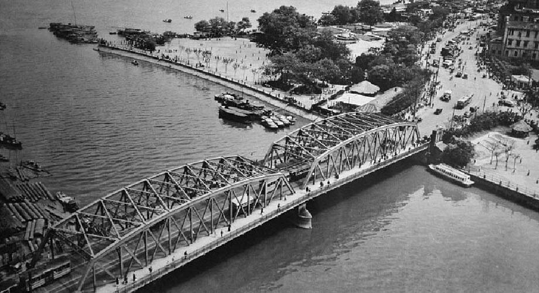
外灘の北端にある外白渡橋は中国に現存する唯一のパーカートラス橋である。前身も含め4代目として1907年に建てられたこの橋は、中国初の全鋼橋であり、この橋は、その交通上の重要性、百年前の姿をとどめる独特なデザインによって、上海の著名なランドマークの一つとなっている。
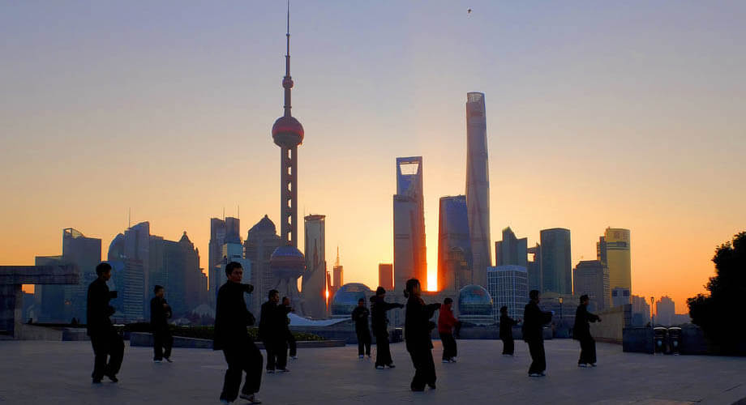
日の出の時間から川沿いでジョギングや太極拳にいそしむ地元の人がたくさんいる。早朝の外灘も捨てがたいんです。陸家嘴のビル群が逆光になる風景はすごく幻想的。また、楽しむ地元の人とも交流できます。ぜひ日の出の時刻に合わせて外灘に出かけてみて下さい。
南京路
上海で最大の繁華街。また、世界で最も賑やかな商店街の一つ。
南京路は南京東路と南京西路に分けられている。歩道の幅がとても広いのが特徴。
地下鉄1、8号線人民広場駅
地下鉄2、10号線南京東路駅
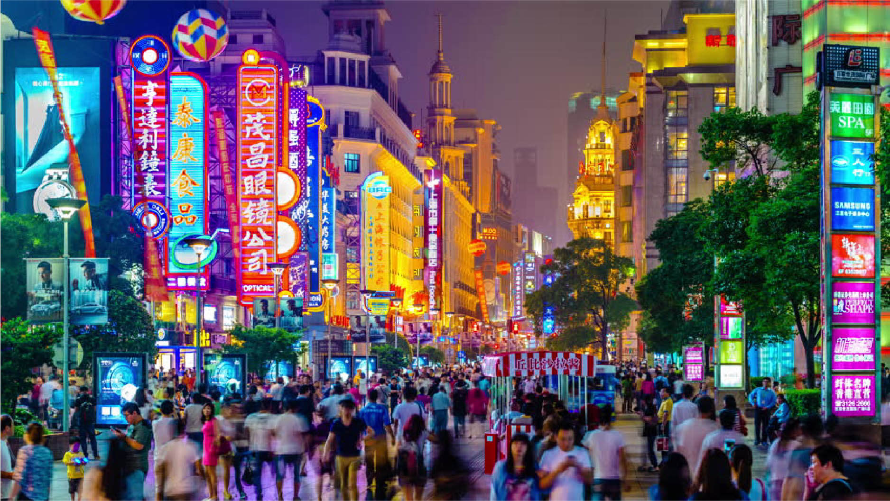
南京路は新古典主義建築が多い。1世紀以上前から南京路全体が上海の中心繁華街になっている。
南京東路は特に商業の発達した地域になっている。東端はバンドの中心から始まっており、西には南京路歩行者天国が広がっている。
ここには上海でも最古で最大のデパートがあり、様々な国内の小売店、歴史の長いレストランなども見られる。
中国の春節や、大晦日、クリスマスや復活祭などの日にイベントが行われる。また、幾つかの商店やショッピングセンターでは花火が打ち上げられる。
南京路の南、人民広場の北にあたる人民公园には上海博物館、上海大劇院、上海城市規画展示館が建てられた。
この公園は市内でも有数の観光スポットとなっている。
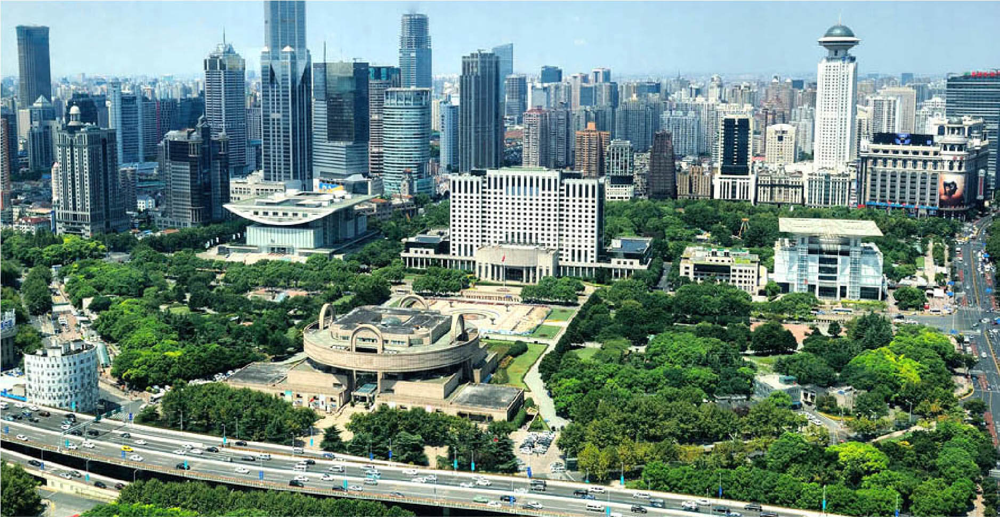
豫園
明代に造られた、400年以上の歴史を持つ古典庭園。
四川省の行政長官であった潘允端が自分の父を愉しませるために1559年から1577年にかけて造園した私的な庭園である。
1961年に一般公開されている。
地下鉄10号線豫園駅から徒歩10分
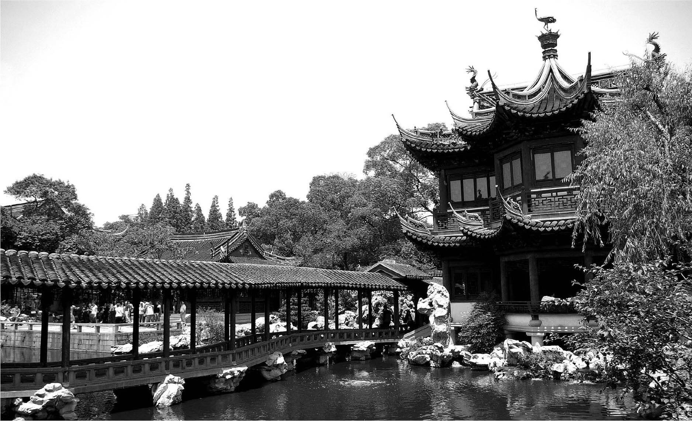
園内の庁堂楼閣、築山と流泉は、 いずれも明・清時代の中国南部の庭園建築芸術を代表するもの。 広さは約20,000平方メートルの中に40ヵ所余りの見どころを持ち、 生き生きとした龍壁、曲がりくねった回廊およびさまざまな形をした花窓によって巧みに隔てられている。 建物、緑、池の水面、美しい名石とが見事に調和し、中国の古典的な美の世界が堪能できる。
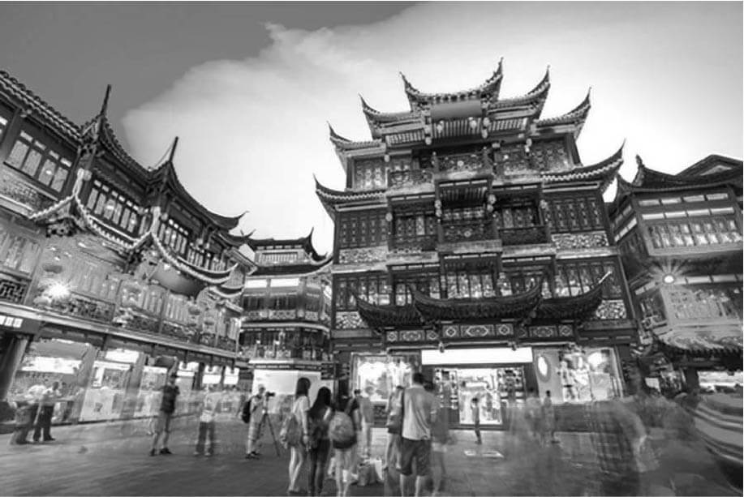
豫園商城は豫園の周辺に広がるショッピングエリアである。雑貨店や骨董品のお店などの土産物、茶館、レストラン、屋台などが並んでいます。古風な中国の伝統的な建物が軒を連ねる景色は、中国のにぎやかな下町そのもの。活気ある街を歩くだけでも楽しめ、ライトアップされる夜の観光もおすすめです。
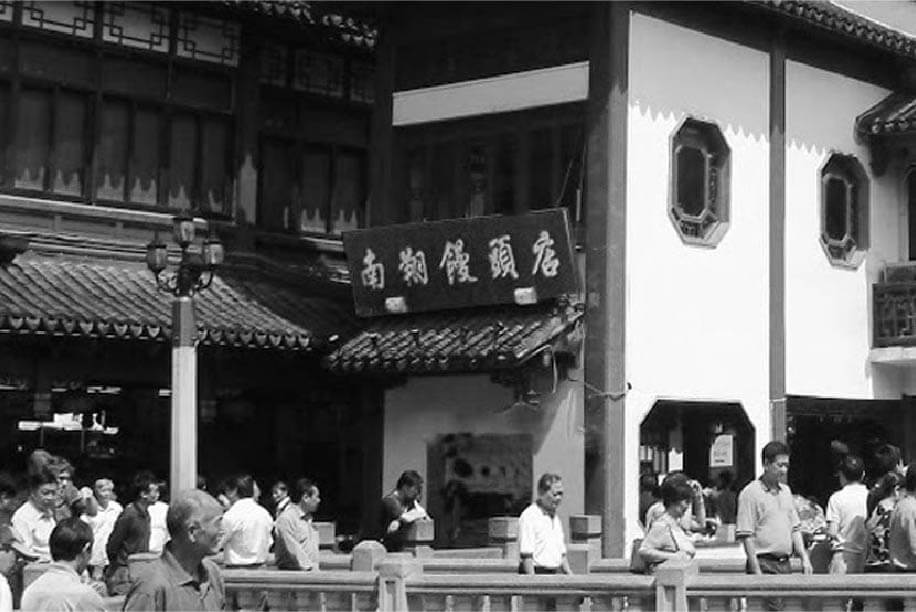
上海の小籠包専門店「南翔饅頭店」の本店は豫園にある。創業以来100年以上の歴史を経て、今もなお行列のできる南翔小籠包の名店です。1階はテイクアウト、2階はセルフサービス、3階はレストランである。地元の食堂のような雰囲気を味わえます。
上海ディズニーランド
世界で12番目にできたディズニーのテーマパーク。
米国のウォルト・ディズニー・ワールド・リゾートとフランスのディズニーランド・パリに次ぐ、世界三番目大きさのディズニーパークである。
地下鉄11号線迪士尼駅から徒歩5分
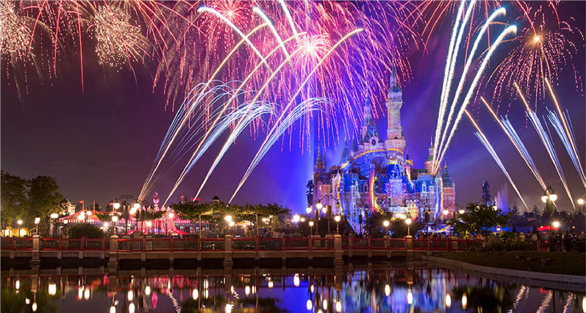
上海ディズニーランドのアトラクションは、他のディズニーランドとは異なる特徴を形成しており、映画『トロン』『トロン: レガシー』に登場したライトサイクルや世界観を再現したトロン・ライトサイクル・パワーランや4D技術を使うカリブの海賊：バトル・フォー・ザ・サンケン・トレジャーなど、テクノロジー性高いアトラクションが多くに設置されてる。
上海ディズニーランドは７つのテーマのエリアで構成されている。また、中国国内のディズニーランドのため、それぞれのエリアは英語だけではなく、漢字の名前も持っている。想像以上の夢の国にぜひ行ったみましょう。
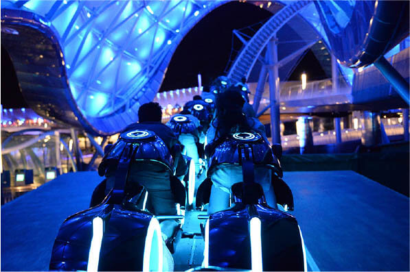
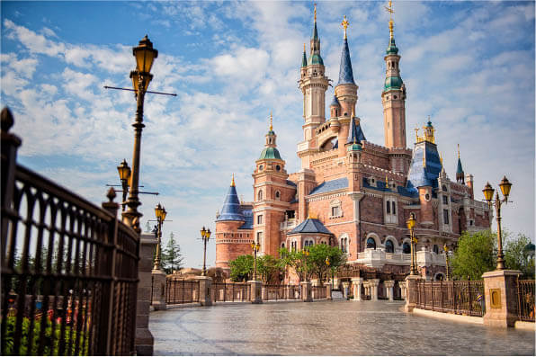
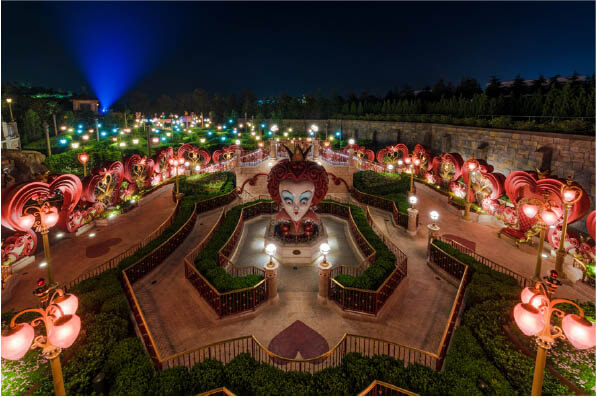
出典：great tibet tour、wonder trip、shanghai navi、上海ディズニーランド